Круглосуточная доставка алкоголя и закусок в Москве
Крепкий алкоголь (водка, виски, коньяк), пиво, вяленая рыба, сухарики, орехи — всё для отличного вечера. Быстро, круглосуточно, с гарантией качества. Доставляем в Чертаново, Бутово, Царицыно, Нагатинскую и другие районы.
Как сделать заказ за 3 шага
Позвоните
+7 (977) 316-57-50
Круглосуточно, без выходных
Оставьте заявку
Заполните форму в разделе Контакты, мы перезвоним за 5 минут
Доставка за 60 минут
В любую точку Москвы. При заказе от 3000₽ — бесплатно. Работаем 24/7, включая ночные часы.
Только оригиналы
Сертифицированный алкоголь, свежие закуски и продукты.
Круглосуточно
Работаем без выходных и перерывов, 24/7. Доставка алкоголя ночью — наша специализация.
Наш ассортимент
Более 2000 наименований: от классики до премиума. Все товары сертифицированы и свежи.

Водка "Березка" Люкс
0.5 л, мягкая, классическая. Пьётся легко, оставляет приятное тепло.
630 ₽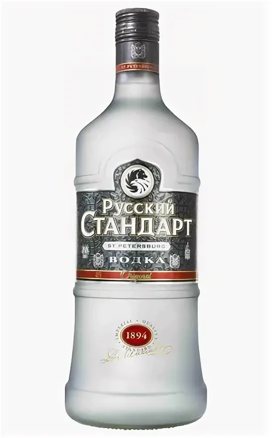
Водка "Русский стандарт" Platinum
0.7 л, премиум, кристально чистая, мягкая.
1670 ₽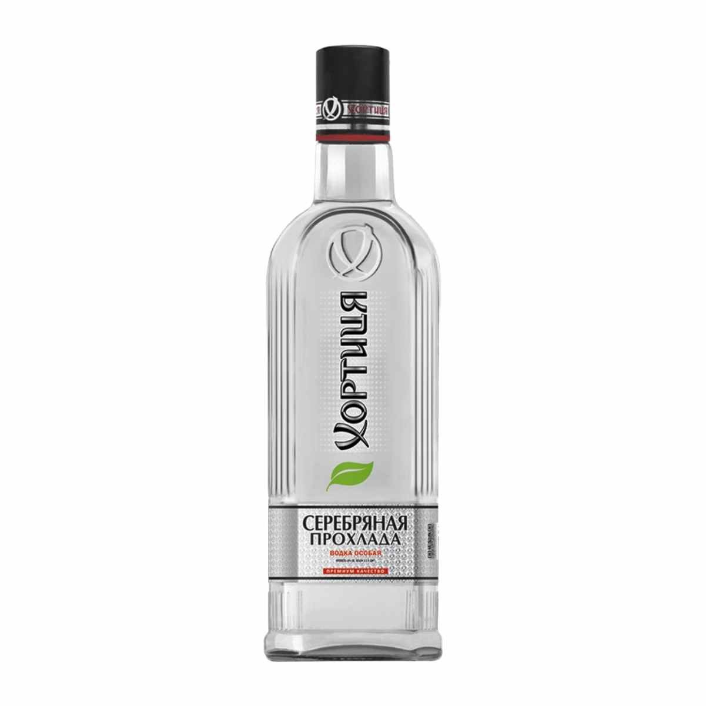
Водка "Хортица" Мягкая
0.5 л, тройная фильтрация, не обжигает.
730 ₽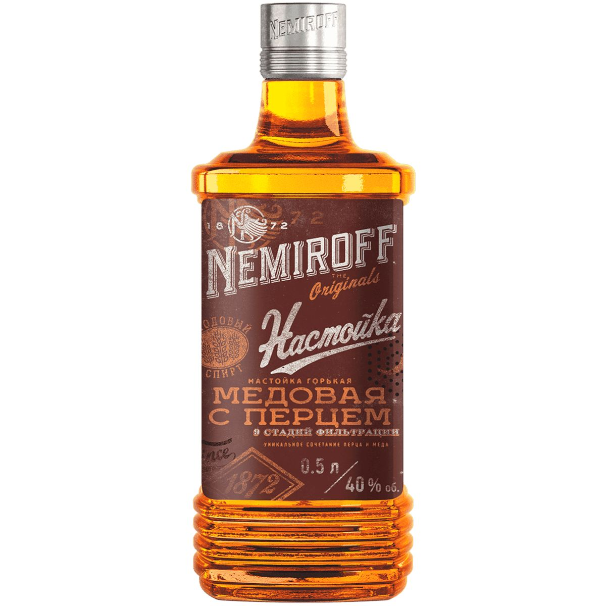
Водка "Nemiroff" Медовая с перцем
0.5 л, согревающий вкус мёда и перца.
970 ₽
Водка "Пять озер" Премиум
0.5 л, сибирская, мягкая, с лёгким сладковатым оттенком.
1100 ₽
Водка "Мягков" Silver
0.5 л, серебряная очистка, без спиртового запаха.
1000 ₽
Водка "Finlandia" Classic
0.7 л, финская, с привкусом ледниковой воды.
1810 ₽
Водка "Beluga" Allure
0.7 л, премиальная, выдержанная, с экстрактами трав.
4190 ₽
Водка "Зеленая марка" Кедровая
0.5 л, с настоем кедровых орехов.
950 ₽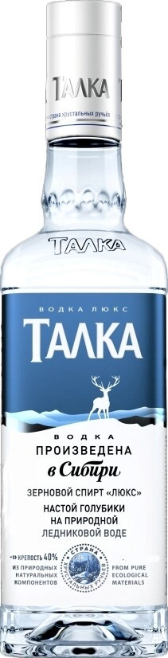
Водка "Талка" Люкс
0.5 л, зерновая, с нотками ржи.
940 ₽
Виски "Jack Daniel's" Old No.7
0.7 л, Теннесси, с дымным вкусом и ванилью.
3920 ₽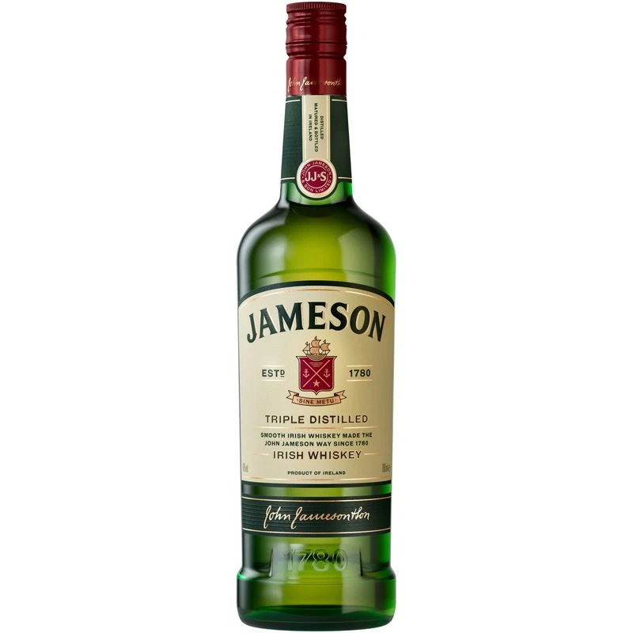
Виски "Jameson" Irish
0.7 л, ирландский, мягкий, с нотами ванили.
3630 ₽
Виски "Johnnie Walker" Black Label
0.7 л, шотландский, 12 лет, дымный.
4610 ₽
Виски "Chivas Regal" 12 yo
0.7 л, медово-фруктовый букет.
5450 ₽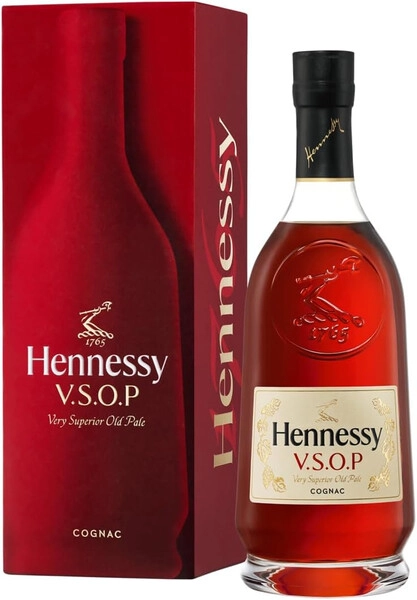
Коньяк "Hennessy" VSOP
0.5 л, Франция, выдержанный.
6990 ₽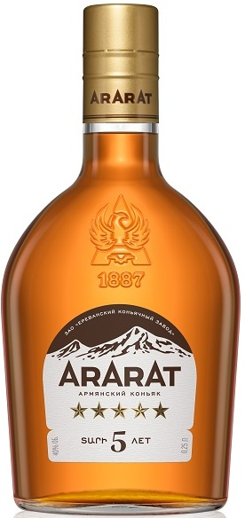
Коньяк "Арарат" 5 лет
0.5 л, Армения, фруктовый.
2370 ₽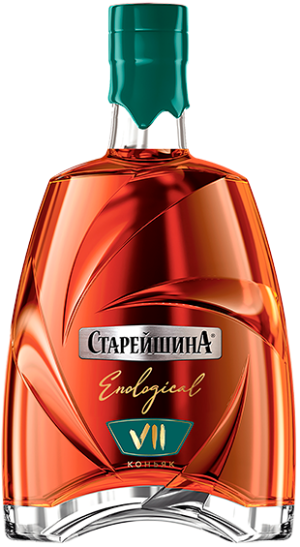
Коньяк "Старейшина" 7 лет
0.5 л, Россия, доступная цена.
1810 ₽
Пиво "Жигулёвское" светлое
4.5%, стекло 0.5 л, классическое, с лёгкой горчинкой.
254 ₽
Пиво "Балтика №3" светлое
4.8%, банка 0.5 л, освежающее.
233 ₽
Пиво "Клинское" светлое
4.2%, стекло 0.5 л, лёгкое.
225 ₽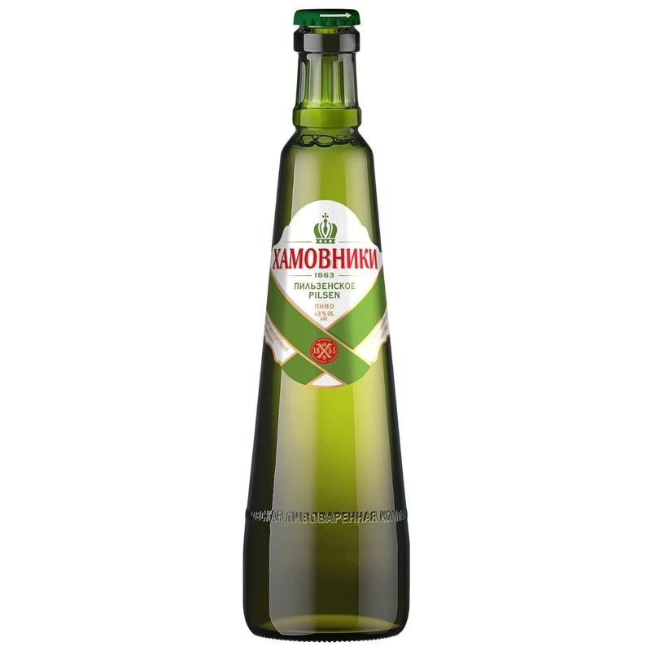
Пиво "Хамовники" Пильзенское
5.2%, стекло 0.5 л, крафтовое, насыщенное.
266 ₽
Velkopopovický Kozel светлое
4.0%, банка 0.5 л, чешское, мягкое.
294 ₽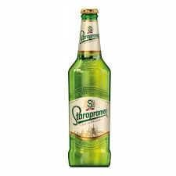
Staropramen светлое
5.0%, стекло 0.5 л, сбалансированное.
336 ₽
Krušovice темное
3.8%, банка 0.5 л, карамельное.
364 ₽
Hoegaarden белое нефильтрованное
4.9%, стекло 0.5 л, с кориандром, мутное, освежающее.
448 ₽
Leffe Blonde аббатское
6.6%, стекло 0.5 л, фруктовое, насыщенное.
490 ₽
Guinness Original стаут
4.2%, банка 0.5 л, кофейное, плотное.
532 ₽
Budweiser Budvar
5.0%, стекло 0.5 л, чешский лагер.
322 ₽
Corona Extra светлое
4.5%, стекло 0.355 л, с лаймом.
406 ₽
Живое нефильтрованное "Ермолино"
5.0%, ПЭТ 1 л, непастеризованное, полный вкус.
252 ₽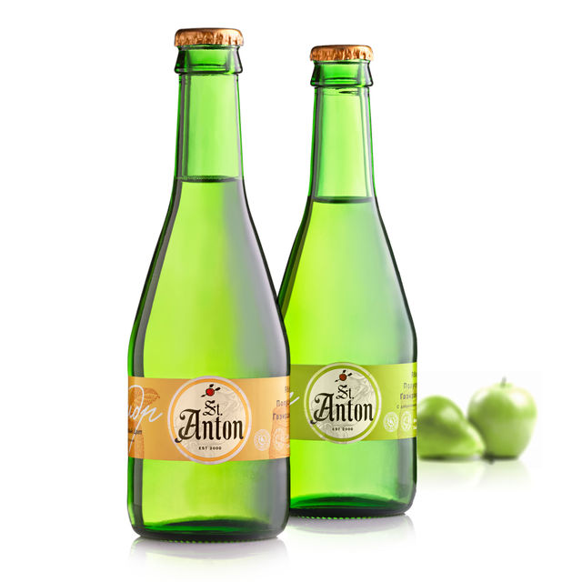
Сидр яблочный "St. Anton"
4.5%, стекло 0.5 л, сухой, яблочный.
308 ₽
Лещ вяленый
150 г, крупный, жирный, идеален к светлому пиву.
392 ₽
Вобла вяленая
100 г, классическая, сухая, под пиво.
266 ₽
Тарань вяленая
100 г, небольшая, ароматная.
238 ₽
Кольца кальмара сушёные
80 г, солёные, упругие.
294 ₽
Креветки сушёные
70 г, маленькие, солёные.
322 ₽
Раки варено-мороженые
500 г, крупные, варёные, достаточно разморозить.
1190 ₽
Сухарики "Кириешки" с беконом
90 г, хрустящие.
91 ₽
Сухарики "Воронцовские" с чесноком
100 г, ржаные.
98 ₽
Сухарики "Три корочки" с сыром
90 г, пшеничные.
95 ₽
Арахис жареный солёный
150 г, классика.
168 ₽
Фисташки солёные
100 г, отборные.
392 ₽
Кешью жареный с солью
100 г, нежные.
448 ₽
Чипсы Lays с солью
150 г, хрустящие.
252 ₽
Чипсы Pringles Original
165 г, в банке.
576 ₽Контакты и доставка
Как с нами связаться
- 📞 Телефон: +7 (977) 316-57-50 (круглосуточно)
- 📧 Email: info@alkovoz.online
- 💬 WhatsApp: +7 (977) 316-57-50
- 📱 Telegram: @alkotaxi_bot
- 🕒 Время работы: 24/7, без выходных
Условия доставки
- Минимальное время доставки: 30 минут.
- Стоимость доставки: 500 ₽ в пределах МКАД.
- Зона доставки: Вся Москва и область
- Оплата: наличными курьеру, переводом на карту СБП, онлайн-оплата на сайте (подключается).
18+
Оставить заявку
Мы перезвоним в течение 5 минут.
АЛКОдоставка — ваш надёжный партнёр в мире алкоголя и закусок
Компания АЛКОдоставка работает на рынке доставки алкоголя в Москве с 2015 года. За это время мы помогли тысячам москвичей организовать праздники, романтические вечера и дружеские посиделки. Наш ассортимент насчитывает более 2000 наименований: от повседневных продуктов до эксклюзивных коллекционных напитков. Почему клиенты выбирают нас? Всё просто: мы гарантируем качество, предлагаем честные цены и доставляем заказы максимально быстро.
Почему важно покупать алкоголь в проверенном месте?
Спиртные напитки – частые гости на любом торжестве. Но некачественный алкоголь может не только испортить вкус вечера, но и нанести вред здоровью. В нашем магазине вы можете быть уверены: каждая бутылка имеет сертификат происхождения, а условия хранения строго соблюдаются. Мы сотрудничаем только с легальными поставщиками и крупными дистрибьюторами, поэтому риск подделки исключён.
Водка – душа России
Водка – самый популярный крепкий напиток в нашей стране. Мы предлагаем водку различных ценовых категорий: от демократичных брендов до премиальных. «Березка» – классическая водка на спирте «Люкс», мягкая и чистая, пьётся легко, оставляя приятное послевкусие. «Русский стандарт» Platinum – эталон премиальной водки, созданной по уникальной рецептуре; она отличается кристальной прозрачностью и мягкостью, идеальна для чистой подачи. «Хортица» Мягкая – водка тройной фильтрации, идеальный баланс вкуса и крепости, не обжигает. «Nemiroff» Медовая с перцем – оригинальная украинская водка с пикантными нотками мёда и перца, отлично согревает и подходит для закуски. «Пять озер» – сибирская водка на чистейшей воде из пяти озёр, мягкая, с лёгким сладковатым оттенком. «Мягков» Silver – водка серебряной очистки, очень мягкая, без спиртового запаха. «Finlandia» Classic – финская водка мирового уровня, чистая, с лёгким привкусом ледниковой воды. «Beluga» Allure – элитная водка с добавлением экстрактов трав и мёда, выдержанная не менее 30 суток, отличается невероятной мягкостью и сложным букетом. «Зеленая марка» Кедровая – водка с настоем кедровых орехов, аромат тайги. «Талка» Люкс – водка из отборного зерна, мягкая с едва уловимыми нотками ржи. Все эти водки можно заказать с доставкой на дом.
Виски – выбор ценителей
Виски – благородный напиток, который пьют не спеша, смакуя каждый глоток. В нашем каталоге представлены основные типы виски: шотландский (Scotch), ирландский (Irish), американский (Bourbon, Tennessee). Jack Daniel’s Old No.7 – легендарный виски из Теннесси, проходящий угольную фильтрацию, с характерным дымным вкусом и ароматом ванили. Jameson – мягкий ирландский купажированный виски, один из самых продаваемых в мире, пьётся легко, с нотами ванили и древесины. Johnnie Walker Black Label – шотландский купаж, выдержанный не менее 12 лет, с насыщенным дымным вкусом и долгим послевкусием. Chivas Regal 12 yo – ещё один знаменитый шотландский купаж с богатым медово-фруктовым букетом. Для тех, кто ищет что-то особенное, у нас есть односолодовые виски: Macallan, Laphroaig, Glenfiddich, Glenmorangie и другие. Бурбон представлен такими марками, как Jim Beam, Maker’s Mark, Wild Turkey. Виски идеально сочетается с сигарой, мясными закусками, сырами и шоколадом. Закажите виски с доставкой и наслаждайтесь вечером в хорошей компании.
Коньяк – символ роскоши
Коньяк – это виноградный бренди, произведённый во французском регионе Коньяк по строгим правилам. Лучшие дома: Hennessy, Martell, Rémy Martin. Hennessy VSOP – выдержанный коньяк с богатым вкусом и ароматом спелого винограда, дуба и пряностей, отлично подойдёт для подарка или особого случая. Армянский коньяк – отдельная гордость. «Арарат» 5 лет – мягкий, с фруктовыми нотами, классика. «Ной» – ещё один популярный армянский бренд. Российский коньяк «Старейшина» 7 лет – достойный вариант по доступной цене. Мы также предлагаем коньяки с выдержкой XO (Extra Old) для настоящих гурманов. Коньяк принято подавать после еды, с кофе или десертом. Он хорошо сочетается с тёмным шоколадом, сырами с плесенью, орехами. Закажите коньяк у нас – мы доставим его быстро и с соблюдением температурного режима.
Пиво – на любой вкус
Пиво – самый популярный слабоалкогольный напиток. В нашем ассортименте вы найдёте пиво на любой вкус: светлое, тёмное, нефильтрованное, живое, крафтовое. Российские сорта: «Жигулёвское» – классика, знакомая с детства, светлое, с лёгкой горчинкой. «Балтика» – разнообразие сортов (№3 светлое, №7 экспортное, №9 крепкое). «Клинское» – лёгкое пиво для освежения. «Хамовники» Пильзенское – крафтовое пиво в стиле пильзнер, золотистое, с насыщенным солодовым вкусом. «Охота» – крепкое пиво для любителей погорячее. Чешское пиво: Velkopopovický Kozel – мягкий сбалансированный лагер; Staropramen – ещё один популярный чешский бренд; Krušovice – королевское пиво с богатой историей; Budweiser Budvar – оригинальный чешский лагер с защищённым географическим указанием. Немецкое пиво: Paulaner Weissbier – пшеничное нефильтрованное, мутное, с бананово-гвоздичным ароматом; Franziskaner – классический хефевайцен; Spaten – мюнхенский лагер. Бельгийское пиво: Hoegaarden – пшеничное с кориандром и апельсиновой цедрой, очень освежающее; Leffe Blonde – аббатское пиво с насыщенным фруктовым ароматом; Stella Artois – светлый лагер. Английское пиво: Guinness Original – знаменитый сухой стаут, плотный, с кофейными нотками. Также у нас есть сидр (яблочный, грушевый) и медовуха. Живое нефильтрованное пиво – это особая категория: оно не пастеризовано, хранится недолго, но обладает полным вкусом и ароматом. Мы доставляем его в специальных термопакетах.
Закуски к пиву – полный набор
Настоящий пивной вечер невозможен без хорошей закуски. Мы предлагаем широкий выбор традиционных и оригинальных закусок. Рыба: лещ, вобла, тарань, плотва – отборные, вяленые по классическим рецептам. Вся рыба средней соли, не пересушенная, идеально подходит к светлому и тёмному пиву. Морепродукты: сушёные кольца кальмара – упругая закуска с лёгким морским привкусом; сушёные креветки – маленькие, но очень вкусные; варёно-мороженые раки – крупные, уже сваренные, достаточно разморозить. Раки – отличная закуска к пиву, особенно в компании. Сухарики: «Кириешки» со вкусом бекона, сыра, холодца; «Воронцовские» с чесноком и зеленью; «Три корочки» с сыром, беконом; ржаные гренки. Орехи: арахис жареный солёный – классика; фисташки – отборные, слегка подсоленные; кешью – нежные орехи; миндаль, фундук. Чипсы: Lays (соль, сыр, бекон, краб), Pringles (оригинальные, паприка, сметана и лук), а также чипсы из толстовского картофеля. Оливки и маслины: зелёные с косточкой, чёрные, фаршированные анчоусом или лимоном. Мясные снеки: колбаски, вяленое мясо, бекон, джерки (вяленое мясо с пряностями). Всё это вы можете заказать вместе с пивом или крепким алкоголем.
Доставка по Москве – быстро и удобно
Мы доставляем заказы ежедневно 24/7 круглосуточно. В пределах МКАД доставка стоит 1000 ₽. При заказе от 3000 ₽ – бесплатно. Минимальное время доставки – 60 минут (в часы пик возможно увеличение). Курьер всегда приедет вовремя и передаст заказ лично в руки, проверив возраст (только 18+). Оплата наличными или переводом на карту СБП.
Мы работаем во всех районах Москвы: Чертаново (Северное, Южное), Бутово (Северное, Южное), Царицыно, Нагатинская, Ясенево, Тёплый Стан, Коньково, Беляево, Черёмушки, Зюзино, Бирюлёво Восточное и Западное, Орехово-Борисово Северное и Южное, Москворечье-Сабурово, Люблино, Марьино, Братеево, Капотня, Кузьминки, Текстильщики, Выхино-Жулебино, Рязанский, Нижегородский, Лефортово, Соколиная Гора и другие. Если вы находитесь в пределах МКАД, мы доставим ваш заказ быстро и с гарантией качества. Также возможна доставка за МКАД по предварительной договорённости.
Как оформить заказ?
Вы можете:
- Позвонить нам по телефону +7 (977) 316-57-50 (круглосуточно).
- Оставить заявку на сайте в разделе Контакты – мы перезвоним в течение 5 минут.
- Написать в мессенджеры (Telegram, WhatsApp) – иконки справа внизу.
Часто задаваемые вопросы
Работаете ли вы круглосуточно?
Приём заявок – круглосуточно. Доставка осуществляется 24/7, включая ночь. Мы обеспечиваем доставку алкоголя ночью Москва без перерывов.
Есть ли у вас безалкогольные напитки?
Да, в каталоге представлены соки, воды, лимонады, энергетики.
Можно ли вернуть товар?
Алкогольная продукция надлежащего качества возврату не подлежит. Если товар оказался с браком – мы заменим его или вернём деньги.
Какие способы оплаты?
Наличные курьеру, перевод на карту СБП, онлайн-оплата на сайте (подключается).
Отзывы наших клиентов
Районы Москвы, в которые мы доставляем
- Чертаново Северное
- Чертаново Южное
- Балашиха
- Реутов
- Зеленоград
- Бутово Северное
- Бутово Южное
- Царицыно
- Нагатинская
- Ясенево
- Тёплый Стан
- Коньково
- Беляево
- Черёмушки
- Зюзино
- Бирюлёво Восточное
- Бирюлёво Западное
- Орехово-Борисово Северное
- Орехово-Борисово Южное
- Москворечье-Сабурово
- Люблино
- Марьино
- Братеево
- Капотня
- Кузьминки
- Текстильщики
- Выхино-Жулебино
- Рязанский
- Нижегородский
- Лефортово
- Соколиная Гора
- Печатники
- Нагатино-Садовники И МНОГИЕ ДРУГИЕ РАЙОНЫ...
Готовы сделать заказ?
Переходите в каталог или свяжитесь с нами любым удобным способом. Быстрая доставка алкоголя в любой район Москвы 24/7.